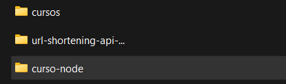
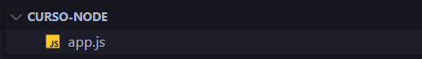
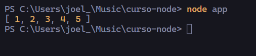

Lo primero es crear una carpeta que se llame
curso-node sin mayúsculas y sin espacios ya que si no dará error en un futuro.Abrimos la carpeta en VSCode y creamos un nuevo archivo que se llame app.js
Dentro de este archivo escribiremos el código JavaScript de toda la vida.
Si nosotros escribimos por ejemplo un array de números y el resultado lo imprimimos en consola necesitaríamos abrir el navegador y ver la consola para poder visualizarlo.
Pero como hemos comentado, node no necesita el navegador para visualizar el código JS.
Lo que necesitamos es abrir el terminal/nuevo terminal dentro de VSCode y escribir node y separado por un espacio el nombre del archivo app.js , no es necesario agregar el formato del archivo ya que node entiende que es un archivo JS.
Como podemos observar, el resultado lo podemos ver desde la consola de VSCode
Lo queremos dar a entender que el mismo código JS que escribimos para el navegador, aquí funcional igual con algunas diferencias principales como por ejemplo el DOM no está disponible y el objeto window tampoco está disponible, pero quitando esas cosillas y un par más el resto es exactamente igual.